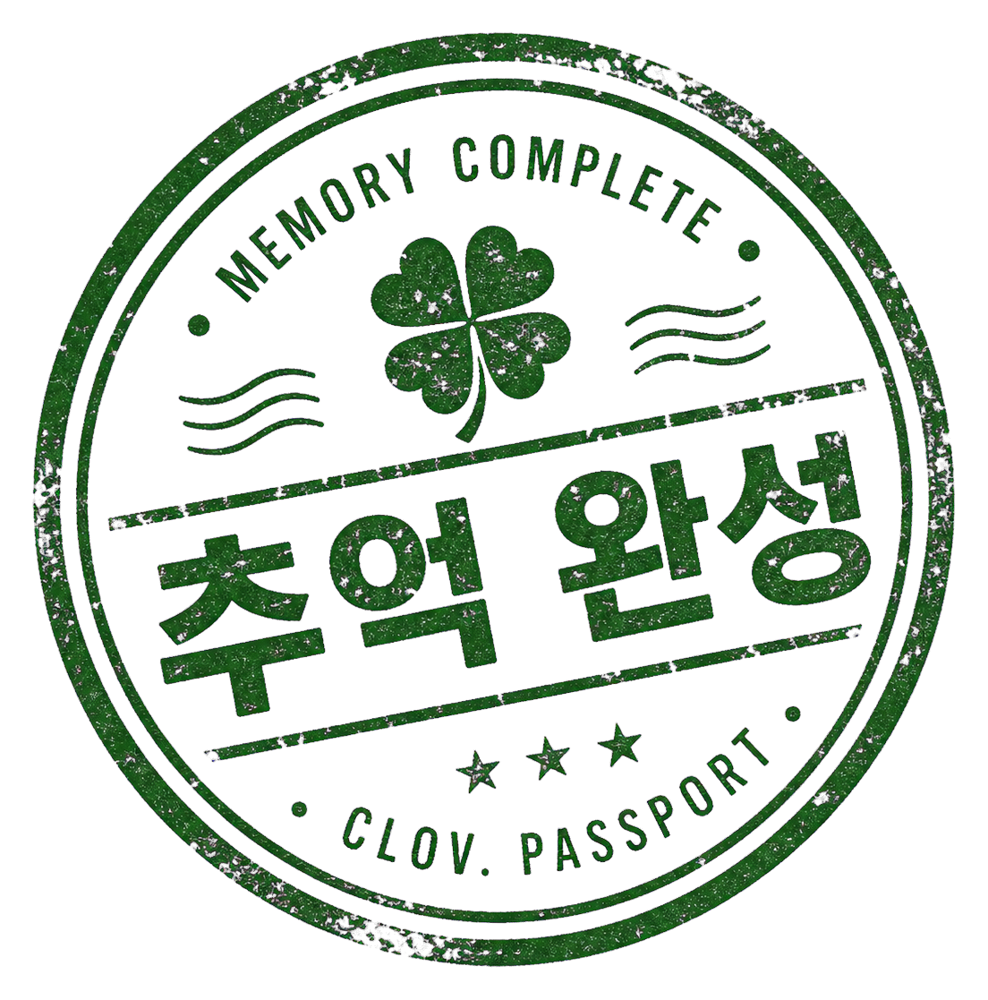

CLOV · 추억피드 · 확정 디자인 레퍼런스
약속 연결 + 스크랩북 도장 — 확정본
구현 스펙은 추억피드-약속연결-스펙.md 참고. 이 문서는 확정된 화면의 비주얼 레퍼런스입니다. 도장 에셋: assets/stamps/memory-complete-stamp.png.
SECTION 01
약속 영수증 도장 규칙 — 4가지 상태
D-Day 도장은 상태와 무관하게 빨강 고정 · 영구 유지(원본 기록). 4컷 완성 시 추억 완성 도장을 교체가 아니라 추가. 일정 없으면 FREE MEMORY.
CLOV. MEMORIES
성수 스터디 카페

③ 4컷 완성 → D-Day + 완성 도장(추가)
SECTION 02
추억 기록하기(글쓰기) 모달 — 약속 연결
기존 모달의 함께한 친구 아래에 약속 연결 섹션 추가. 일정계획에서 가져와 scheduleId 저장 · 안 하면 자유 기록 · ＋새 약속 폴백. 왼쪽=기본(가져오기 전), 오른쪽=연결됨.
✏️ 추억 기록하기×
함께한 친구
솔솔민민
약속 연결 (선택 · 일정계획)
🗓️ 일정계획에서 약속 가져오기
연결 안 하면 자유 기록(FREE MEMORY)으로 저장돼요
기록 남기기 ✓
기본 — 가져오기 전
✏️ 추억 기록하기×
약속 연결 (선택 · 일정계획)
D+22성수 스터디 카페 · 연결됨변경해제
기록 남기기 ✓
연결됨 — 칩 + 변경/해제
SECTION 03
추억 상세 — MEMORY PASSPORT
피드 폴라로이드 클릭 → 이 상세. 대표사진 1장 크게 + 썸네일 스트립(최대 30·+N·사진 클릭 시 슬라이드 갤러리), 옆에 scheduleId 참조 영수증 + 완성 도장. 하단 친구 한 줄 메시지는 그대로 유지.
★ CLOV MEMORY PASSPORT ★
성수 스터디 카페
REPUBLIC OF CLOVER · 우정 여권
×
CLOV. MEMORIES
D+22
성수 스터디 카페
REMARKS
문제 풀고 커피 마시며 집중한 날. 네 컷 다 모았다 — 이제 추억으로 남긴다.
MEM<CLOV<<SEONGSU<STUDY<CAFE<<<20260615<4CUT4OF4
친구 한 줄 메시지
나나문제 하나 풀어서 뿌듯수정삭제
솔솔아직 메시지 없음
민민조용해서 집중 잘 됐다
친구는 메시지만 남길 수 있어요닫기
＊ 연결 없으면 영수증 자리에 FREE MEMORY 스탬프 · 친구 메시지 영역은 손대지 않음
SECTION 04
추억 피드 (변경 없음)
폴라로이드 카드 그대로 유지 · 클릭 → openMemoryDetail(postId) → 위 상세 오픈.
솔의 기록● 자세히
성수 스터디 카페
문제 풀고 커피 마시며 집중한 날.
#소중한순간#친구기록